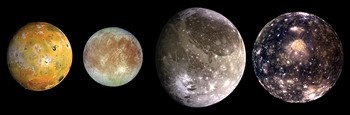

Seznam planetov v osončju navaja planete našega Osončja po definiciji Mednarodne astronomske zveze (IAU) - astronomska telesa v tiru okrog Sonca, ki so dovolj velika in masivna, da dosežejo hidrostatično ravnovesje ter s svojim gravitacijskim privlakom počistijo območje svojega tira.

Naše osončje ima po tej definiciji 8 planetov (po vrstnem redu oddaljenosti od Sonca):
Prve štiri Jupitrove naravne satellite je opazil 7. in 8. januarja leta 1619 Galileo Galilei. Ti naravni sateliti danes tvorijo skupino Galilejevih satelitov in so daleč največja telesa okrog Jupitra, saj preostalih 59 naravnih satelitov predstavlja le 0,003% skupne krožeče mase. Največje štiri Jupitrove lune so: